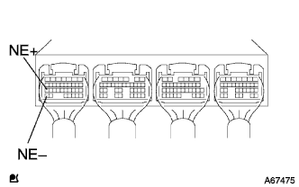
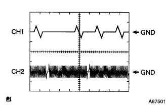
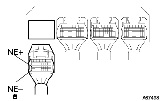
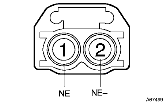

DTC P0335/12 Crank angle sensor system |
DTC P0335/13 Crank angle sensor system |
DTC P1335/13 Crank angle sensor system (instant disconnection) |
| DTC No. | DTC detection conditions
| Inspection site |
| P0335/12 |
|
|
| P0335/13 |
|
|
| P1335/13 |
|
|
| Step 1 | Engine Control Company Single Inspection |
|  |
Connect Tascan between the engine control compilation connector A27 (NE+) ← → A34 (NE-) terminal.(The terminal array isreference)
|  |
Set Tascan into the oscilloscope function.[See the Tascan instruction manual for the setting method]
| item | Content |
| Measuring terminal | Ch1: g2+← → NE- Ch2: NE+← → NE- |
| Instrument set | 2v/din, 20ms/din |
| conditions | At the time of idle rotation |
|
| ||||
| NG | |
| Step 2 | Crank position sensor single inspection |
reference)
|
| ||||
| OK | |
| Step 3 | Wire harness or connector inspection (engine control compilationa-crank Posesisillon sensor) |
|  |
Cut the connector A of the engine control compilation composer A and the crank Posesisillon sensor.
|  |
Use Toyota Electrical Tester to check the conduction and short circuit between the engine control computers ← → crank Posesisillon sensor.(The terminal array isreference)
| Measuring terminal Engine Control Company ← → Crank Posesisillon Sensa | standard |
| A27 (NE+) ← → 1 (NE+) | There is no conduction, there is no short circuit between other terminals and between body earth |
| A34 (NE-) ← → 2 (NE-) | There is no conduction, there is no short circuit between other terminals and between body earth |
|
| ||||
| OK | |
| Step 4 | Sensor mounting unit inspection |
Check the bolt of the crank Posishillon sensor and the mounting status.
|
| ||||
| OK | |
| Step 5 | Crankshaft inspection |
Check the uneven and mounting status of the crank angle sensor.
|
| ||||
| OK | ||
| ||